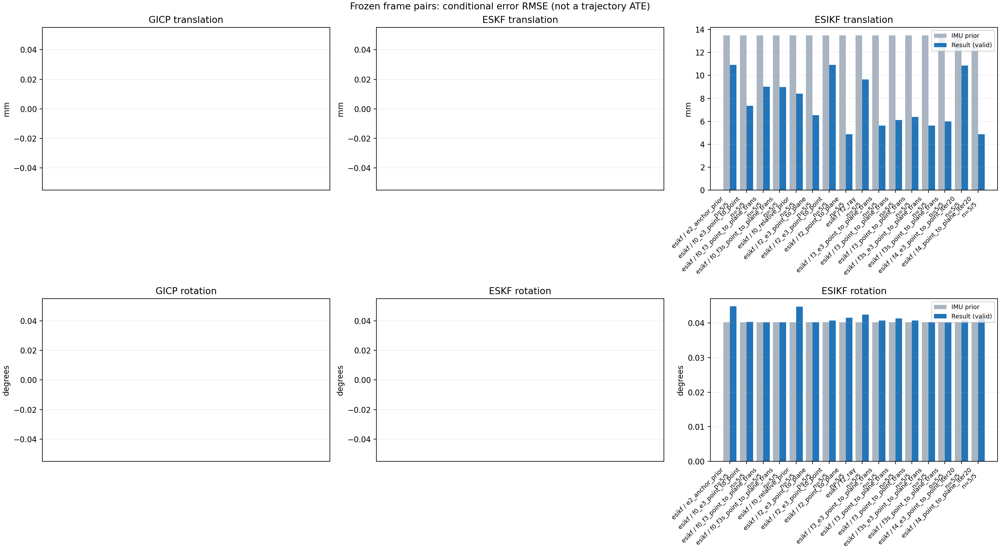

20261015_112659_forward · depth=disparity_cache · cache=20c65507a779de881023
模型视差：/home/ubuntu22/slam/SIO_SLAM/models/tensorrt/disp_896x448_fp16.plan；engine SHA256=604cf6ac1f705c877260711730dd5d2d58c2a21f3020c03c668401ef7fb1e768。输入为生产裁剪与光照处理后的 RGB 0..255；此实验使用原始浮点像素视差，不应用完整前端的邻域视差后处理。
原始 ONNX SHA256：e9f49736a65d68d06681add463866b6defdf78fdd7f4f50f6cc941b682fdc0bc。
代价体图改写验证：ONNX Runtime 固定随机特征输入，最大绝对误差 0；该项检查图改写，完整模型精度仍需由录制数据评估。
配准代码版本：744ac2d993ae629b0cc44a3b1d995e04ab4fad48；观测生成版本：744ac2d993ae629b0cc44a3b1d995e04ab4fad48。
固定图像对与纯 IMU 先验；ESKF 回放固定 GICP 观测，ESIKF 直接读取点云。真值只用于此报告。
同时查看 converged 与 solver_status：上游默认 Stereo 在 max_iter / stopped_at_minimum 时也可能置 converged=true。valid 表示输入检查通过，不表示精度提升。欧氏 GICP 未提供独立的点距 RMSE，该列显示 NaN。
误差按每对图像的锚点计算，单位 m / degrees。此处 RMSE 不是全序列 ATE；末帧受同一锚点条件约束。NIS 与条件马氏距离是诊断量，少量相关图像对不能用于宣称协方差已校准。
全部指标 CSV · R / P 矩阵 CSV · Stereo 求解逐轮 CSV · ESIKF 逐轮轨迹 CSV · 末轮 H / R / K_pose 矩阵 CSV · 配置快照 · 矢量图
unflagged 排除纯惯性先验平移误差超过 50 mm 的图像对；whitened 为误差按协方差白化后的每自由度均值，协方差与实际误差相符时约为 1。prior_whitened 用真值误差只检验先验 P；NIS 为 ESIKF 首轮 rᵀ(P+R)⁻¹r，不用真值，检验的是 P+R 的总量，单靠它分不开 P 与 R，偏差、错误对应和线性化误差也会抬高它。观测方差超过先验方差 1e+04 倍的方向视为不可观，从 NIS 及其自由度中去掉（nis_dof）。一致时 nis_per_dof 均值约 1、nis_over_chi2_median 中位数约 1；帧对少且共享序列，超出 95% 分位的比例只作参考。
| stage | method | variant | valid | total | result_translation_rmse_m | result_rotation_rmse_deg | result_translation_median_m | result_rotation_median_deg | result_translation_rmse_unflagged_m | result_rotation_rmse_unflagged_deg | improved_translation | improved_rotation | posterior_whitened_by_P_rot_mean | posterior_whitened_by_P_trans_mean | prior_whitened_by_P_rot_mean | prior_whitened_by_P_trans_mean | nis_per_dof_mean | nis_over_chi2_median_median | nis_exceeds_chi2_95_fraction |
|---|---|---|---|---|---|---|---|---|---|---|---|---|---|---|---|---|---|---|---|
| esikf | esikf | e2_anchor_prior | 5 | 5 | 0.010909 | 0.044819 | 0.005089 | 0.010863 | 0.010909 | 0.044819 | 2 | 4 | 168.14 | 143.19 | 90.494 | 2.835 | 7.8389 | 6.7541 | 1 |
| esikf | esikf | f0_e3_point_to_point | 5 | 5 | 0.0073459 | 0.040336 | 0.0054274 | 0.011318 | 0.0073459 | 0.040336 | 2 | 2 | 72.653 | 1.536 | 70.802 | 0.013138 | 0.070666 | 0.073838 | 0 |
| esikf | esikf | f0_f3_point_to_plane_trans | 5 | 5 | 0.0089996 | 0.040264 | 0.0091668 | 0.011307 | 0.0089996 | 0.040264 | 2 | 4 | 72.327 | 47.695 | 70.802 | 0.013138 | 1.2486 | 0.13768 | 0.2 |
| esikf | esikf | f0_f3s_point_to_plane_trans | 5 | 5 | 0.008994 | 0.040272 | 0.0093514 | 0.011322 | 0.008994 | 0.040272 | 2 | 0 | 70.802 | 47.966 | 70.802 | 0.013138 | 1.2486 | 0.13768 | 0.2 |
| esikf | esikf | f0_relative_prior | 5 | 5 | 0.0084214 | 0.044793 | 0.0061027 | 0.012289 | 0.0084214 | 0.044793 | 2 | 1 | 111.25 | 131.35 | 70.802 | 0.013138 | 6.2648 | 3.4634 | 1 |
| esikf | esikf | f2_e3_point_to_plane | 5 | 5 | 0.0065337 | 0.040253 | 0.004237 | 0.011305 | 0.0065337 | 0.040253 | 4 | 4 | 101.74 | 2.4863 | 90.494 | 2.835 | 0.746 | 1.1342 | 0 |
| esikf | esikf | f2_e3_point_to_point | 5 | 5 | 0.010904 | 0.040748 | 0.0044627 | 0.011302 | 0.010904 | 0.040748 | 4 | 3 | 107.94 | 4.4339 | 90.494 | 2.835 | 0.17628 | 0.26272 | 0 |
| esikf | esikf | f2_point_to_plane | 5 | 5 | 0.004861 | 0.041562 | 0.0040879 | 0.010727 | 0.004861 | 0.041562 | 2 | 3 | 126.33 | 14.892 | 90.494 | 2.835 | 12.53 | 15.961 | 1 |
| esikf | esikf | f2_ray | 5 | 5 | 0.009649 | 0.042493 | 0.0043066 | 0.011386 | 0.009649 | 0.042493 | 3 | 1 | 132.26 | 24.525 | 90.494 | 2.835 | 16.07 | 18.571 | 1 |
| esikf | esikf | f3_e3_point_to_plane_trans | 5 | 5 | 0.0056296 | 0.040694 | 0.0042045 | 0.011316 | 0.0056296 | 0.040694 | 4 | 2 | 102.78 | 2.1727 | 90.494 | 2.835 | 1.7629 | 2.3915 | 0.2 |
| esikf | esikf | f3_point_to_plane_trans | 5 | 5 | 0.0061197 | 0.041368 | 0.0061849 | 0.011122 | 0.0061197 | 0.041368 | 2 | 3 | 124.99 | 26.25 | 90.494 | 2.835 | 21.412 | 24.236 | 1 |
| esikf | esikf | f3_point_to_point_trans | 5 | 5 | 0.0063784 | 0.040731 | 0.0070058 | 0.011155 | 0.0063784 | 0.040731 | 2 | 2 | 127.52 | 189.04 | 90.494 | 2.835 | 6.9256 | 2.0494 | 0.4 |
| esikf | esikf | f3s_e3_point_to_plane_trans | 5 | 5 | 0.0056378 | 0.040272 | 0.0042046 | 0.011322 | 0.0056378 | 0.040272 | 4 | 0 | 90.494 | 2.1716 | 90.494 | 2.835 | 1.7629 | 2.3915 | 0.2 |
| esikf | esikf | f3s_point_to_plane_trans | 5 | 5 | 0.0060026 | 0.040272 | 0.0060384 | 0.011322 | 0.0060026 | 0.040272 | 2 | 0 | 90.494 | 25.324 | 90.494 | 2.835 | 21.412 | 24.236 | 1 |
| esikf | esikf | f4_e3_point_to_point_iter20 | 5 | 5 | 0.010856 | 0.040733 | 0.0044627 | 0.011302 | 0.010856 | 0.040733 | 4 | 3 | 107.9 | 4.4281 | 90.494 | 2.835 | 0.17628 | 0.26272 | 0 |
| esikf | esikf | f4_point_to_plane_iter20 | 5 | 5 | 0.0048722 | 0.041482 | 0.0041539 | 0.010727 | 0.0048722 | 0.041482 | 2 | 3 | 126.11 | 14.927 | 90.494 | 2.835 | 12.53 | 15.961 | 1 |

| stage | case | method | variant | status | solver_status | inliers | converged | covariance_convention | covariance_from_hessian | fitness | registration_rmse_m | prior_trans_error_m | result_trans_error_m | prior_rot_error_deg | result_rot_error_deg | prior_flagged | R_rot_trace_rad2 | R_pos_trace_m2 | nis_regularized | posterior_whitened_by_P_rot | posterior_whitened_by_P_trans | prior_whitened_by_P_rot | prior_whitened_by_P_trans | nis_per_dof | nis_dof |
|---|---|---|---|---|---|---|---|---|---|---|---|---|---|---|---|---|---|---|---|---|---|---|---|---|---|
| esikf | static_start | esikf | e2_anchor_prior | updated | converged | 17220 | 1 | 1 | 0 | 0 | 9.0452e-05 | 0.00072135 | 0.0025908 | 0.0025414 | 0 | 1.0914e-07 | 8.6611e-07 | nan | 2.4645 | 3.3091 | 2.5314 | 0.031748 | 4.1143 | 6 | |
| esikf | static_start | esikf | f0_relative_prior | updated | converged | 17237 | 1 | 1 | 0 | 0 | 9.0452e-05 | 0.0029571 | 0.0025908 | 0.0026005 | 0 | 1.088e-07 | 8.6489e-07 | nan | 2.2816 | 13.929 | 2.219 | 0.0016837 | 2.148 | 6 | |
| esikf | static_start | esikf | f2_point_to_plane | updated | converged | 17220 | 1 | 1 | 0 | 0 | 9.0452e-05 | 0.00040537 | 0.0025908 | 0.0024942 | 0 | 7.6402e-07 | 3.4093e-06 | nan | 2.3901 | 0.74695 | 2.5314 | 0.031748 | 7.4294 | 6 | |
| esikf | static_start | esikf | f2_ray | updated | converged | 17220 | 1 | 1 | 0 | 0 | 9.0452e-05 | 0.00081887 | 0.0025908 | 0.0026082 | 0 | 0.0093592 | 1.272e-05 | nan | 2.5597 | 3.1082 | 2.5314 | 0.031748 | 13.933 | 3 | |
| esikf | static_start | esikf | f3_point_to_point_trans | updated | converged | 17222 | 1 | 1 | 0 | 0 | 9.0452e-05 | 0.0014346 | 0.0025908 | 0.0026012 | 0 | 0.1091 | 8.6486e-07 | nan | 2.5446 | 18.679 | 2.5314 | 0.031748 | 11.214 | 3 | |
| esikf | static_start | esikf | f3_point_to_plane_trans | updated | converged | 17220 | 1 | 1 | 0 | 0 | 9.0452e-05 | 0.00094357 | 0.0025908 | 0.0025971 | 0 | 0.76331 | 3.4074e-06 | nan | 2.5396 | 4.197 | 2.5314 | 0.031748 | 19.657 | 3 | |
| esikf | static_start | esikf | f0_f3_point_to_plane_trans | updated | converged | 17283 | 1 | 1 | 0 | 0 | 9.0452e-05 | 0.0049127 | 0.0025908 | 0.0026037 | 0 | 0.7572 | 3.3351e-06 | nan | 2.236 | 22.889 | 2.219 | 0.0016837 | 5.1287 | 3 | |
| esikf | static_start | esikf | f3s_point_to_plane_trans | updated | converged | 17220 | 1 | 1 | 0 | 0 | 9.0452e-05 | 0.00094356 | 0.0025908 | 0.0025908 | 0 | 0.76331 | 3.4074e-06 | nan | 2.5314 | 4.1969 | 2.5314 | 0.031748 | 19.657 | 3 | |
| esikf | static_start | esikf | f0_f3s_point_to_plane_trans | updated | converged | 17282 | 1 | 1 | 0 | 0 | 9.0452e-05 | 0.0049194 | 0.0025908 | 0.0025908 | 0 | 0.75699 | 3.3345e-06 | nan | 2.219 | 23.035 | 2.219 | 0.0016837 | 5.1287 | 3 | |
| esikf | static_start | esikf | f4_point_to_plane_iter20 | updated | converged | 17220 | 1 | 1 | 0 | 0 | 9.0452e-05 | 0.00040537 | 0.0025908 | 0.0024942 | 0 | 7.6402e-07 | 3.4093e-06 | nan | 2.3901 | 0.74695 | 2.5314 | 0.031748 | 7.4294 | 6 | |
| esikf | static_start | esikf | f2_e3_point_to_point | updated | converged | 17220 | 1 | 1 | 0 | 0 | 9.0452e-05 | 0.00010034 | 0.0025908 | 0.0025909 | 0 | 1.2139e-05 | 7.2072e-05 | nan | 2.5301 | 0.039525 | 2.5314 | 0.031748 | 0.070873 | 4 | |
| esikf | static_start | esikf | f0_e3_point_to_point | updated | converged | 17220 | 1 | 1 | 0 | 0 | 9.0452e-05 | 0.00031724 | 0.0025908 | 0.0025915 | 0 | 1.2144e-05 | 7.2164e-05 | nan | 2.2191 | 0.023061 | 2.219 | 0.0016837 | 0.061963 | 4 | |
| esikf | static_start | esikf | f2_e3_point_to_plane | updated | converged | 17220 | 1 | 1 | 0 | 0 | 9.0452e-05 | 9.6458e-05 | 0.0025908 | 0.0025891 | 0 | 4.4594e-05 | 0.00012201 | nan | 2.5279 | 0.036299 | 2.5314 | 0.031748 | 0.16134 | 3 | |
| esikf | static_start | esikf | f3_e3_point_to_plane_trans | updated | converged | 17220 | 1 | 1 | 0 | 0 | 9.0452e-05 | 0.00011068 | 0.0025908 | 0.002591 | 0 | 0.76321 | 0.00012201 | nan | 2.5316 | 0.047809 | 2.5314 | 0.031748 | 0.65239 | 3 | |
| esikf | static_start | esikf | f3s_e3_point_to_plane_trans | updated | converged | 17220 | 1 | 1 | 0 | 0 | 9.0452e-05 | 0.00011068 | 0.0025908 | 0.0025908 | 0 | 0.76321 | 0.00012201 | nan | 2.5314 | 0.047809 | 2.5314 | 0.031748 | 0.65239 | 3 | |
| esikf | static_start | esikf | f4_e3_point_to_point_iter20 | updated | converged | 17220 | 1 | 1 | 0 | 0 | 9.0452e-05 | 0.00010034 | 0.0025908 | 0.0025909 | 0 | 1.2139e-05 | 7.2072e-05 | nan | 2.5301 | 0.039525 | 2.5314 | 0.031748 | 0.070873 | 4 | |
| esikf | sync_motion | esikf | e2_anchor_prior | updated | converged | 16220 | 1 | 1 | 0 | 0 | 0.0013397 | 0.0021711 | 0.011322 | 0.010863 | 0 | 1.1417e-07 | 9.2678e-07 | nan | 45.138 | 33.244 | 46.461 | 3.1745 | 6.0203 | 6 | |
| esikf | sync_motion | esikf | f0_relative_prior | updated | converged | 16166 | 1 | 1 | 0 | 0 | 0.0013397 | 0.0043341 | 0.011322 | 0.012289 | 0 | 1.1523e-07 | 9.4353e-07 | nan | 46.702 | 97.324 | 39.185 | 0.010513 | 3.0871 | 6 | |
| esikf | sync_motion | esikf | f2_point_to_plane | updated | converged | 16233 | 1 | 1 | 0 | 0 | 0.0013397 | 0.001798 | 0.011322 | 0.010727 | 0 | 7.8007e-07 | 3.5821e-06 | nan | 42.693 | 9.597 | 46.461 | 3.1745 | 14.227 | 6 | |
| esikf | sync_motion | esikf | f2_ray | updated | converged | 16229 | 1 | 1 | 0 | 0 | 0.0013397 | 0.0010102 | 0.011322 | 0.011386 | 0 | 0.0065193 | 1.1058e-05 | nan | 46.746 | 2.5711 | 46.461 | 3.1745 | 30.251 | 3 | |
| esikf | sync_motion | esikf | f3_point_to_point_trans | updated | converged | 16318 | 1 | 1 | 0 | 0 | 0.0013397 | 0.0073244 | 0.011322 | 0.011155 | 0 | 0.11272 | 9.0794e-07 | nan | 45.947 | 449.6 | 46.461 | 3.1745 | 20.492 | 3 | |
| esikf | sync_motion | esikf | f3_point_to_plane_trans | updated | converged | 16219 | 1 | 1 | 0 | 0 | 0.0013397 | 0.0028003 | 0.011322 | 0.011122 | 0 | 0.78416 | 3.6301e-06 | nan | 45.262 | 24.394 | 46.461 | 3.1745 | 50.731 | 3 | |
| esikf | sync_motion | esikf | f0_f3_point_to_plane_trans | updated_not_converged | max_iterations | 16259 | 0 | 1 | 0 | 0 | 0.0013397 | 0.0096813 | 0.011322 | 0.011307 | 0 | 0.78839 | 3.5169e-06 | nan | 39.119 | 78.388 | 39.185 | 0.010513 | 0.92195 | 3 | |
| esikf | sync_motion | esikf | f3s_point_to_plane_trans | updated | converged | 16219 | 1 | 1 | 0 | 0 | 0.0013397 | 0.0028004 | 0.011322 | 0.011322 | 0 | 0.78417 | 3.6298e-06 | nan | 46.461 | 24.395 | 46.461 | 3.1745 | 50.731 | 3 | |
| esikf | sync_motion | esikf | f0_f3s_point_to_plane_trans | updated_not_converged | max_iterations | 16271 | 0 | 1 | 0 | 0 | 0.0013397 | 0.0097426 | 0.011322 | 0.011322 | 0 | 0.7884 | 3.5171e-06 | nan | 39.185 | 78.613 | 39.185 | 0.010513 | 0.92195 | 3 | |
| esikf | sync_motion | esikf | f4_point_to_plane_iter20 | updated | converged | 16233 | 1 | 1 | 0 | 0 | 0.0013397 | 0.001798 | 0.011322 | 0.010727 | 0 | 7.8007e-07 | 3.5821e-06 | nan | 42.693 | 9.597 | 46.461 | 3.1745 | 14.227 | 6 | |
| esikf | sync_motion | esikf | f2_e3_point_to_point | updated | converged | 16242 | 1 | 1 | 0 | 0 | 0.0013397 | 0.0013284 | 0.011322 | 0.011302 | 0 | 1.2634e-05 | 7.6706e-05 | nan | 46.38 | 3.1523 | 46.461 | 3.1745 | 0.22047 | 4 | |
| esikf | sync_motion | esikf | f0_e3_point_to_point | updated | converged | 16182 | 1 | 1 | 0 | 0 | 0.0013397 | 0.0039815 | 0.011322 | 0.011318 | 0 | 1.2798e-05 | 7.8428e-05 | nan | 39.201 | 1.2356 | 39.185 | 0.010513 | 0.045318 | 4 | |
| esikf | sync_motion | esikf | f2_e3_point_to_plane | updated | converged | 16242 | 1 | 1 | 0 | 0 | 0.0013397 | 0.0013289 | 0.011322 | 0.011305 | 0 | 4.5487e-05 | 0.00012875 | nan | 46.356 | 3.1525 | 46.461 | 3.1745 | 0.89453 | 3 | |
| esikf | sync_motion | esikf | f3_e3_point_to_plane_trans | updated | converged | 16242 | 1 | 1 | 0 | 0 | 0.0013397 | 0.0013368 | 0.011322 | 0.011316 | 0 | 0.77848 | 0.00012875 | nan | 46.429 | 3.1945 | 46.461 | 3.1745 | 1.8861 | 3 | |
| esikf | sync_motion | esikf | f3s_e3_point_to_plane_trans | updated | converged | 16242 | 1 | 1 | 0 | 0 | 0.0013397 | 0.0013368 | 0.011322 | 0.011322 | 0 | 0.77848 | 0.00012875 | nan | 46.461 | 3.1945 | 46.461 | 3.1745 | 1.8861 | 3 | |
| esikf | sync_motion | esikf | f4_e3_point_to_point_iter20 | updated | converged | 16242 | 1 | 1 | 0 | 0 | 0.0013397 | 0.0013284 | 0.011322 | 0.011302 | 0 | 1.2634e-05 | 7.6706e-05 | nan | 46.38 | 3.1523 | 46.461 | 3.1745 | 0.22047 | 4 | |
| esikf | main_motion | esikf | e2_anchor_prior | updated_not_converged | max_iterations | 17238 | 0 | 1 | 0 | 0 | 0.0045997 | 0.005089 | 0.029347 | 0.029139 | 0 | 9.9181e-08 | 1.0167e-06 | nan | 319.5 | 113.27 | 240.81 | 4.2795 | 4.2081 | 6 | |
| esikf | main_motion | esikf | f0_relative_prior | updated_not_converged | max_iterations | 17278 | 0 | 1 | 0 | 0 | 0.0045997 | 0.0061027 | 0.029347 | 0.029538 | 0 | 9.8699e-08 | 1.0092e-06 | nan | 209.84 | 147.54 | 191.38 | 0.018797 | 2.7717 | 6 | |
| esikf | main_motion | esikf | f2_point_to_plane | updated | converged | 17240 | 1 | 1 | 0 | 0 | 0.0045997 | 0.0049277 | 0.029347 | 0.029356 | 0 | 7.2178e-07 | 3.8428e-06 | nan | 303.21 | 24.471 | 240.81 | 4.2795 | 15.779 | 6 | |
| esikf | main_motion | esikf | f2_ray | updated | converged | 17203 | 1 | 1 | 0 | 0 | 0.0045997 | 0.0043066 | 0.029347 | 0.030529 | 0 | 0.0062408 | 1.2362e-05 | nan | 326.18 | 10.815 | 240.81 | 4.2795 | 14.646 | 3 | |
| esikf | main_motion | esikf | f3_point_to_point_trans | updated_not_converged | max_iterations | 17272 | 0 | 1 | 0 | 0 | 0.0045997 | 0.0070862 | 0.029347 | 0.029797 | 0 | 0.096447 | 9.6788e-07 | nan | 321.83 | 288.58 | 240.81 | 4.2795 | 1.6163 | 3 | |
| esikf | main_motion | esikf | f3_point_to_plane_trans | updated_not_converged | max_iterations | 17311 | 0 | 1 | 0 | 0 | 0.0045997 | 0.0071102 | 0.029347 | 0.029335 | 0 | 0.71658 | 3.7845e-06 | nan | 302.44 | 43.756 | 240.81 | 4.2795 | 19.114 | 3 | |
| esikf | main_motion | esikf | f0_f3_point_to_plane_trans | updated_not_converged | max_iterations | 17340 | 0 | 1 | 0 | 0 | 0.0045997 | 0.012743 | 0.029347 | 0.029341 | 0 | 0.71354 | 3.5762e-06 | nan | 196.51 | 80.813 | 191.38 | 0.018797 | 0.10858 | 3 | |
| esikf | main_motion | esikf | f3s_point_to_plane_trans | updated_not_converged | max_iterations | 17307 | 0 | 1 | 0 | 0 | 0.0045997 | 0.0069937 | 0.029347 | 0.029347 | 0 | 0.71512 | 3.7776e-06 | nan | 240.81 | 41.502 | 240.81 | 4.2795 | 19.114 | 3 | |
| esikf | main_motion | esikf | f0_f3s_point_to_plane_trans | updated_not_converged | max_iterations | 17331 | 0 | 1 | 0 | 0 | 0.0045997 | 0.012455 | 0.029347 | 0.029347 | 0 | 0.714 | 3.5646e-06 | nan | 191.38 | 79.042 | 191.38 | 0.018797 | 0.10858 | 3 | |
| esikf | main_motion | esikf | f4_point_to_plane_iter20 | updated | converged | 17240 | 1 | 1 | 0 | 0 | 0.0045997 | 0.0049277 | 0.029347 | 0.029356 | 0 | 7.2178e-07 | 3.8428e-06 | nan | 303.21 | 24.471 | 240.81 | 4.2795 | 15.779 | 6 | |
| esikf | main_motion | esikf | f2_e3_point_to_point | updated | converged | 17261 | 1 | 1 | 0 | 0 | 0.0045997 | 0.0044627 | 0.029347 | 0.029342 | 0 | 1.1071e-05 | 8.5471e-05 | nan | 246.23 | 4.6999 | 240.81 | 4.2795 | 0.22293 | 4 | |
| esikf | main_motion | esikf | f0_e3_point_to_point | updated_not_converged | max_iterations | 17240 | 0 | 1 | 0 | 0 | 0.0045997 | 0.0054274 | 0.029347 | 0.029362 | 0 | 1.0983e-05 | 8.3999e-05 | nan | 196.64 | 1.6185 | 191.38 | 0.018797 | 0.020443 | 5 | |
| esikf | main_motion | esikf | f2_e3_point_to_plane | updated | converged | 17268 | 1 | 1 | 0 | 0 | 0.0045997 | 0.004237 | 0.029347 | 0.029405 | 0 | 4.3283e-05 | 0.0001415 | nan | 247.56 | 4.1506 | 240.81 | 4.2795 | 0.95758 | 3 | |
| esikf | main_motion | esikf | f3_e3_point_to_plane_trans | updated | converged | 17264 | 1 | 1 | 0 | 0 | 0.0045997 | 0.0042045 | 0.029347 | 0.029401 | 0 | 0.73681 | 0.00014165 | nan | 247.38 | 4.08 | 240.81 | 4.2795 | 1.3197 | 3 | |
| esikf | main_motion | esikf | f3s_e3_point_to_plane_trans | updated | converged | 17263 | 1 | 1 | 0 | 0 | 0.0045997 | 0.0042046 | 0.029347 | 0.029347 | 0 | 0.73683 | 0.00014165 | nan | 240.81 | 4.0799 | 240.81 | 4.2795 | 1.3197 | 3 | |
| esikf | main_motion | esikf | f4_e3_point_to_point_iter20 | updated | converged | 17261 | 1 | 1 | 0 | 0 | 0.0045997 | 0.0044627 | 0.029347 | 0.029342 | 0 | 1.1071e-05 | 8.5471e-05 | nan | 246.23 | 4.6999 | 240.81 | 4.2795 | 0.22293 | 4 | |
| esikf | main_motion_long | esikf | e2_anchor_prior | updated_not_converged | max_iterations | 15558 | 0 | 1 | 0 | 0 | 0.028091 | 0.022358 | 0.084242 | 0.095177 | 0 | 1.3809e-07 | 1.4665e-06 | nan | 469.12 | 410.7 | 157.07 | 4.281 | 10.554 | 6 | |
| esikf | main_motion_long | esikf | f0_relative_prior | updated_not_converged | max_iterations | 15631 | 0 | 1 | 0 | 0 | 0.028091 | 0.015004 | 0.084242 | 0.0948 | 0 | 1.2723e-07 | 1.2694e-06 | nan | 293.95 | 241.16 | 117.92 | 0.019235 | 9.3412 | 6 | |
| esikf | main_motion_long | esikf | f2_point_to_plane | updated_not_converged | max_iterations | 15522 | 0 | 1 | 0 | 0 | 0.028091 | 0.0040879 | 0.084242 | 0.087416 | 0 | 9.8356e-07 | 4.9004e-06 | nan | 278.67 | 8.9394 | 157.07 | 4.281 | 16.029 | 6 | |
| esikf | main_motion_long | esikf | f2_ray | updated_not_converged | max_iterations | 15547 | 0 | 1 | 0 | 0 | 0.028091 | 0.0125 | 0.084242 | 0.089134 | 0 | 0.0058507 | 3.9701e-05 | nan | 280.1 | 36.777 | 157.07 | 4.281 | 6.1769 | 3 | |
| esikf | main_motion_long | esikf | f3_point_to_point_trans | updated_not_converged | max_iterations | 15548 | 0 | 1 | 0 | 0 | 0.028091 | 0.0069586 | 0.084242 | 0.085225 | 0 | 0.12187 | 1.1693e-06 | nan | 262.41 | 64.386 | 157.07 | 4.281 | 0.56491 | 3 | |
| esikf | main_motion_long | esikf | f3_point_to_plane_trans | updated_not_converged | max_iterations | 15525 | 0 | 1 | 0 | 0 | 0.028091 | 0.0061849 | 0.084242 | 0.086912 | 0 | 0.97879 | 4.8594e-06 | nan | 270.17 | 15.682 | 157.07 | 4.281 | 3.6273 | 3 | |
| esikf | main_motion_long | esikf | f0_f3_point_to_plane_trans | updated | converged | 15535 | 1 | 1 | 0 | 0 | 0.028091 | 0.0063777 | 0.084242 | 0.084231 | 0 | 0.98322 | 4.8919e-06 | nan | 120.24 | 15.889 | 117.92 | 0.019235 | 0.0114 | 3 | |
| esikf | main_motion_long | esikf | f3s_point_to_plane_trans | updated_not_converged | max_iterations | 15530 | 0 | 1 | 0 | 0 | 0.028091 | 0.0060384 | 0.084242 | 0.084242 | 0 | 0.98157 | 4.8979e-06 | nan | 157.07 | 14.949 | 157.07 | 4.281 | 3.6273 | 3 | |
| esikf | main_motion_long | esikf | f0_f3s_point_to_plane_trans | updated_not_converged | max_iterations | 15536 | 0 | 1 | 0 | 0 | 0.028091 | 0.0065388 | 0.084242 | 0.084242 | 0 | 0.98274 | 4.8843e-06 | nan | 117.92 | 16.589 | 117.92 | 0.019235 | 0.0114 | 3 | |
| esikf | main_motion_long | esikf | f4_point_to_plane_iter20 | updated | converged | 15526 | 1 | 1 | 0 | 0 | 0.028091 | 0.0041539 | 0.084242 | 0.087226 | 0 | 9.7768e-07 | 4.8596e-06 | nan | 277.54 | 9.1154 | 157.07 | 4.281 | 16.029 | 6 | |
| esikf | main_motion_long | esikf | f2_e3_point_to_point | updated_not_converged | max_iterations | 15656 | 0 | 1 | 0 | 0 | 0.028091 | 0.022291 | 0.084242 | 0.085389 | 0 | 1.4339e-05 | 0.00010851 | nan | 239.04 | 11.254 | 157.07 | 4.281 | 0.12971 | 6 | |
| esikf | main_motion_long | esikf | f0_e3_point_to_point | updated_not_converged | max_iterations | 15629 | 0 | 1 | 0 | 0 | 0.028091 | 0.012816 | 0.084242 | 0.084395 | 0 | 1.3919e-05 | 0.00010223 | nan | 121.65 | 3.037 | 117.92 | 0.019235 | 0.10233 | 6 | |
| esikf | main_motion_long | esikf | f2_e3_point_to_plane | updated_not_converged | max_iterations | 15611 | 0 | 1 | 0 | 0 | 0.028091 | 0.011931 | 0.084242 | 0.08419 | 0 | 5.713e-05 | 0.00017311 | nan | 207 | 3.057 | 157.07 | 4.281 | 0.72742 | 5 | |
| esikf | main_motion_long | esikf | f3_e3_point_to_plane_trans | updated_not_converged | max_iterations | 15563 | 0 | 1 | 0 | 0 | 0.028091 | 0.0098308 | 0.084242 | 0.085246 | 0 | 0.95915 | 0.00017317 | nan | 212.43 | 1.9775 | 157.07 | 4.281 | 1.9394 | 3 | |
| esikf | main_motion_long | esikf | f3s_e3_point_to_plane_trans | updated_not_converged | max_iterations | 15563 | 0 | 1 | 0 | 0 | 0.028091 | 0.0098656 | 0.084242 | 0.084242 | 0 | 0.96059 | 0.00017296 | nan | 157.07 | 1.9784 | 157.07 | 4.281 | 1.9394 | 3 | |
| esikf | main_motion_long | esikf | f4_e3_point_to_point_iter20 | updated | converged | 15655 | 1 | 1 | 0 | 0 | 0.028091 | 0.022174 | 0.084242 | 0.085354 | 0 | 1.4342e-05 | 0.00010851 | nan | 238.87 | 11.225 | 157.07 | 4.281 | 0.12971 | 6 | |
| esikf | static_end | esikf | e2_anchor_prior | updated | converged | 12192 | 1 | 1 | 0 | 0 | 0.0099324 | 0.0080011 | 0.0040144 | 0.0033861 | 0 | 2.1491e-07 | 1.3172e-06 | nan | 4.4839 | 155.42 | 5.5898 | 2.4084 | 14.298 | 6 | |
| esikf | static_end | esikf | f0_relative_prior | updated | converged | 12184 | 1 | 1 | 0 | 0 | 0.0099324 | 0.0080441 | 0.0040144 | 0.0038424 | 0 | 2.1457e-07 | 1.312e-06 | nan | 3.4611 | 156.78 | 3.3093 | 0.015461 | 13.976 | 6 | |
| esikf | static_end | esikf | f2_point_to_plane | updated | converged | 12211 | 1 | 1 | 0 | 0 | 0.0099324 | 0.0085881 | 0.0040144 | 0.0034917 | 0 | 1.144e-06 | 4.6013e-06 | nan | 4.711 | 30.704 | 5.5898 | 2.4084 | 9.1868 | 6 | |
| esikf | static_end | esikf | f2_ray | updated_not_converged | max_iterations | 12300 | 0 | 1 | 0 | 0 | 0.0099324 | 0.017001 | 0.0040144 | 0.0038481 | 0 | 0.0092955 | 9.0927e-06 | nan | 5.697 | 69.354 | 5.5898 | 2.4084 | 15.343 | 3 | |
| esikf | static_end | esikf | f3_point_to_point_trans | updated | converged | 12191 | 1 | 1 | 0 | 0 | 0.0099324 | 0.0070058 | 0.0040144 | 0.0035454 | 0 | 0.21198 | 1.2855e-06 | nan | 4.8525 | 123.96 | 5.5898 | 2.4084 | 0.74089 | 3 | |
| esikf | static_end | esikf | f3_point_to_plane_trans | updated | converged | 12261 | 1 | 1 | 0 | 0 | 0.0099324 | 0.0094718 | 0.0040144 | 0.0034359 | 0 | 1.1031 | 4.4465e-06 | nan | 4.5561 | 43.221 | 5.5898 | 2.4084 | 13.931 | 3 | |
| esikf | static_end | esikf | f0_f3_point_to_plane_trans | updated | converged | 12246 | 1 | 1 | 0 | 0 | 0.0099324 | 0.0091668 | 0.0040144 | 0.0039336 | 0 | 1.1099 | 4.462e-06 | nan | 3.5319 | 40.496 | 3.3093 | 0.015461 | 0.072244 | 3 | |
| esikf | static_end | esikf | f3s_point_to_plane_trans | updated_not_converged | max_iterations | 12260 | 0 | 1 | 0 | 0 | 0.0099324 | 0.0092762 | 0.0040144 | 0.0040144 | 0 | 1.1049 | 4.4439e-06 | nan | 5.5898 | 41.576 | 5.5898 | 2.4084 | 13.931 | 3 | |
| esikf | static_end | esikf | f0_f3s_point_to_plane_trans | updated_not_converged | max_iterations | 12245 | 0 | 1 | 0 | 0 | 0.0099324 | 0.0093514 | 0.0040144 | 0.0040144 | 0 | 1.1103 | 4.4803e-06 | nan | 3.3093 | 42.551 | 3.3093 | 0.015461 | 0.072244 | 3 | |
| esikf | static_end | esikf | f4_point_to_plane_iter20 | updated | converged | 12211 | 1 | 1 | 0 | 0 | 0.0099324 | 0.0085881 | 0.0040144 | 0.0034917 | 0 | 1.144e-06 | 4.6013e-06 | nan | 4.711 | 30.704 | 5.5898 | 2.4084 | 9.1868 | 6 | |
| esikf | static_end | esikf | f2_e3_point_to_point | updated | converged | 12233 | 1 | 1 | 0 | 0 | 0.0099324 | 0.0087114 | 0.0040144 | 0.0039075 | 0 | 2.5158e-05 | 0.00012148 | nan | 5.5159 | 3.0239 | 5.5898 | 2.4084 | 0.23743 | 4 | |
| esikf | static_end | esikf | f0_e3_point_to_point | updated_not_converged | max_iterations | 12189 | 0 | 1 | 0 | 0 | 0.0099324 | 0.0077556 | 0.0040144 | 0.0039503 | 0 | 2.3848e-05 | 0.00010911 | nan | 3.5572 | 1.7656 | 3.3093 | 0.015461 | 0.12327 | 4 | |
| esikf | static_end | esikf | f2_e3_point_to_plane | updated | converged | 12184 | 1 | 1 | 0 | 0 | 0.0099324 | 0.0071676 | 0.0040144 | 0.0037931 | 0 | 7.0642e-05 | 0.0001878 | nan | 5.2534 | 2.0351 | 5.5898 | 2.4084 | 0.98912 | 3 | |
| esikf | static_end | esikf | f3_e3_point_to_plane_trans | updated | converged | 12151 | 1 | 1 | 0 | 0 | 0.0099324 | 0.0065068 | 0.0040144 | 0.0037478 | 0 | 1.2342 | 0.00018923 | nan | 5.1355 | 1.5634 | 5.5898 | 2.4084 | 3.0172 | 3 | |
| esikf | static_end | esikf | f3s_e3_point_to_plane_trans | updated | converged | 12151 | 1 | 1 | 0 | 0 | 0.0099324 | 0.0064898 | 0.0040144 | 0.0040144 | 0 | 1.2348 | 0.00018923 | nan | 5.5898 | 1.5573 | 5.5898 | 2.4084 | 3.0172 | 3 | |
| esikf | static_end | esikf | f4_e3_point_to_point_iter20 | updated | converged | 12233 | 1 | 1 | 0 | 0 | 0.0099324 | 0.0087114 | 0.0040144 | 0.0039075 | 0 | 2.5158e-05 | 0.00012148 | nan | 5.5159 | 3.0239 | 5.5898 | 2.4084 | 0.23743 | 4 |